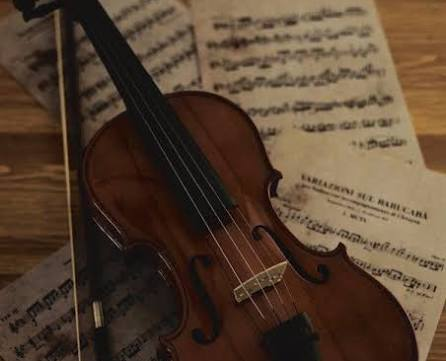

Música Clásica
Armonía sinfónica, cuerdas y la raíz de toda composición moderna.
Explorar galería →
Electrónica
Sintetizadores, diseño sonoro y ritmos envolventes contemporáneos.
Explorar galería →
Jazz
Improvisación pura, neo-soul y libertad instrumental sin límites.
Explorar galería →El Arte del Sonido: Selección Actual
Disfruta de propuestas modernas y de alta calidad para cada estilo.
Jazz Moderno / Suave
Romantic Sax & Strings
Electrónica / Festival Mix
Arvin Trance EDM / Tomorrowland Style
Música Clásica
Classical Genesis - Obras Maestras